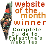

January 2000
Baha Boukhari's website Palestinian cartoonist, Baha Boukhari's extensive website with over 100 of his popular cartoons.
October 1999
Musa Budeiri's personal website with many of his published papers, reviews and articles as well as information about the campaign against his deportation in August 1999.
August 1999
The Palestine Report is published by the Jerusalem Media and Communications Centre. For many years in its print version, this report was a valuable English-language source of information about events in Palestine. In August 1999, the Palestine Report moved from print to the Web and promises to continue the excellence established over the last few years.
June 1999
A beautifully designed website Jerusalemites.org is this month's Website of the Month. The site represents the Jerusalem Forum which was formed eight years ago by a group of 19 Palestinians. They pledged they would unite the people and supporters of Jerusalem and
assist Palestinians who live under Israeli military occupation. To this end, they established the Jerusalem Forum in
Amman.
May 1999
We go official this month with the Permanent Observer Mission to the UN - Regardless of what one thinks of the UN and its role in relation to Palestine, this site is well designed and extremely useful. You never need to search for the texts of the Camp David Accords, Oslo, Wye or any of those countless UN resolutions again.
April 1999
A new NGO is this month's winner of the Website of the Month. Miftah - The Palestinian Initiative for the Promotion of Global Dialogue and Democracy. It's great to see that this NGO launched their website when they began and not years later. They have a good approach to the web, with a strong emphasis on content and regularly updated with USEFUL information. Other NGOs should really take note.
March 1999
We've stepped outside the norm this month and awarded two websites with website of the month. One from outside and one from inside Palestine that cover different themes but really show the potential of the web.
Ali Abunimah's Bitter Pill Frustrated with watching CNN? Angry with the daily distortions of media reports on the Middle East? This is the place for you. Ali monitors the media and collects facts about the Middle East. Very little gets by CNN, Reuters or National Public Radio (US public radio) without a comment from Ali. Recently he even debated the Israeli consul in Chicago. Ali's work is important because it shows what we can do with a patient, determined approach to reporting on the region. Ali also makes good use of email discussion lists (particularly the Freedom List) and the web in general to gather information and discuss issues.
Arab Supernet A completely new look for this site based in Ramallah. The important feature of this site is the pioneering use of a web/database interface, the first of its kind in Palestine. Contains information about business and trade in Palestine with a directory on which companies can alter information on-line. Promises soon customized mailing lists and updated news. We need to take this as a model to use in other areas in Palestine.
November 1998
Shammout.com is a the site of two Palestinian artists Ismail and Tammam Shammout. Online art is not really a new concept but this site is attractive and fills a gap in Palestine's websites. One of the most impressive parts of this site is the fascinating history of Palestinian art which is complete with pictures.
September 1998
Welcome to Yafa Homepage is an on-line memorial to Yafa. The site has a thoughtful discussion board, a photogallery, and interesting historical research about this important town in Palestinian life. The use of the web as a meeting place for Palestinians who left Yafa in 1948 during Al-Nakba is an exciting concept and one that we hope is repeated for other towns and villages in Palestine. The fact that the father of the Birzeit University webmaster was one of these people had nothing to do with decision to award this site such a prestigious title.
May 1998
Dheisheh Refugee Camp is the first Palestinian refugee camp to get online, a project by Palestinian journalist Muna Hamzeh-Muhaisen and webmaster Mary Gossage. "A Palestinians commemorate 50 years of Nakba, a refugee camp tells its story," starts off the sitewhich includes a section by the children of the camp with the results of a school essay project about the Nakba, the Palestinian "Catastrophe" resulting from the creation of the State of Israel and related displacement of almost 1,000,000 people into camps like Dheisheh both inside and outside of Palestine. Once we see some photos of the camp and children online, this is sure to be a winner of a coveted 1998 Golden Olive Award.
April 1998
Palestine Information Center at http://www.alquds.org/palestine/index.html, not to be confused with various other websites of the same name, has been relaunched with an excellent new design and serves as a resource for information on Palestine. Good archive and historical documents section, the news section awaits article submissions. Outside as opposed to inside Palestine.
March 1998
Free Ahmad Qatamesh! - A timely, content-rich, attractive website for this Palestinian political prisoner. You'll understand why it won when you see it.
February 1998
Palestinian Securities Exchange, Ltd. - Awarded primarily because of the quotes section, updated on every trading day, although we have asked them to start archiving them which isn't happening at the moment. A very useful bookmark for the business types.